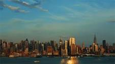

Yellowstone


Geographical Location: North America
Yellowstone is the first national park in the United States. It covers over 2.2 million acres, and provides an opportunity to see wildlife and explore geothermal areas. In fact, Yellowstone contains about half the world's active geysers.
These unique opportunities also bring out a lot of bad decisions among the tourists. Every year visitors injure themselves or the wildlife by getting close to the animals. You can see examples of people making bad decisions by visiting Yellowstone National Park: Invasion of the Idiots, Tourons of Yellowstone, or Cowboy State Daily.
Photo Gallery


New York

Geographical Location: North America
New York City thrives as a vibrant tapestry of cultures, languages, and experiences. Its streets pulse with energy, reflecting the city's boundless diversity. From the rhythmic beats of street performers in Times Square to the aroma of diverse cuisines wafting through neighborhoods, NYC's lively atmosphere encapsulates a living, breathing microcosm of the world.
From the iconic skyline to the bustling streets, it's a place where dreams are both pursued and realized. The city's fast-paced lifestyle is balanced by its diverse communities, offering a unique blend of cultures, cuisines, and experiences around every corner. Amid the hustle and bustle, there's a sense of constant motion and an electrifying energy that makes life in the Big Apple truly extraordinary.
Photo Gallery


Shanghai


Geographical Location: East Asia
Shanghai, often referred to as the "Pearl of the Orient," is a dynamic and vibrant metropolis in China. As one of the world's largest cities, Shanghai is a dazzling blend of tradition and modernity. With its iconic skyline featuring towering skyscrapers like the Shanghai Tower and the Oriental Pearl Tower, it's no wonder that Shanghai is often considered the financial and economic hub of Asia. Beyond its impressive architecture, the city boasts a rich cultural heritage, reflected in its historic neighborhoods such as the Bund and the French Concession. Here, you can stroll along tree-lined streets, explore colonial-era buildings, and savor a mix of international cuisines. Shanghai is also a global center for fashion, art, and entertainment, with a thriving arts scene, world-class museums, and a bustling nightlife. Visitors to Shanghai are sure to be captivated by its energy, diversity, and the seamless fusion of old and new.
Shanghai is not just a city of skyscrapers; it's a city of contrasts. The serene Yu Garden and its classical Chinese architecture offer a peaceful escape from the bustling streets, while the ultra-modern shopping districts like Nanjing Road cater to the desires of avid shoppers. The city's food scene is a culinary adventure in itself, with a vast array of local and international dishes available from street vendors to Michelin-starred restaurants. Additionally, Shanghai is a gateway to Chinese culture and history, as it hosts numerous festivals, art exhibitions, and performances that showcase China's heritage. Whether you're wandering through ancient temples, exploring the thriving contemporary art scene, or enjoying a traditional tea ceremony, Shanghai promises a multifaceted experience that captures the essence of China's past, present, and future.
Photo Gallery


GuaMexico

.jpg)
Geographical Location: North America
As the sun dips low in the sky, Guanajuato, the vibrant small town in Mexico, unfolds a spectacular tableau of hues and shadows that bewitch every onlooker. The historic town, celebrated as the backdrop for the acclaimed animation "Coco," transforms into a realm of dreams. Its vividly painted houses, basking in the warm golden glow of the evening sun, offer a picturesque sight that resonates deeply with the joyous and spirited theme of the beloved movie.
Guanajuato at twilight is a painting that comes to life, a perfect blend of reality and the fantastic world depicted in "Coco." The array of colors presented by the quaint houses form a harmonious canvas that radiates a tranquil yet vibrant energy as the day transitions to night. This little town, full of life and color, offers a surreal experience, inviting dreamers and artists alike to immerse themselves in its poetic scenery, alive with stories and rich cultural tapestry.
Photo Gallery


.jpg)